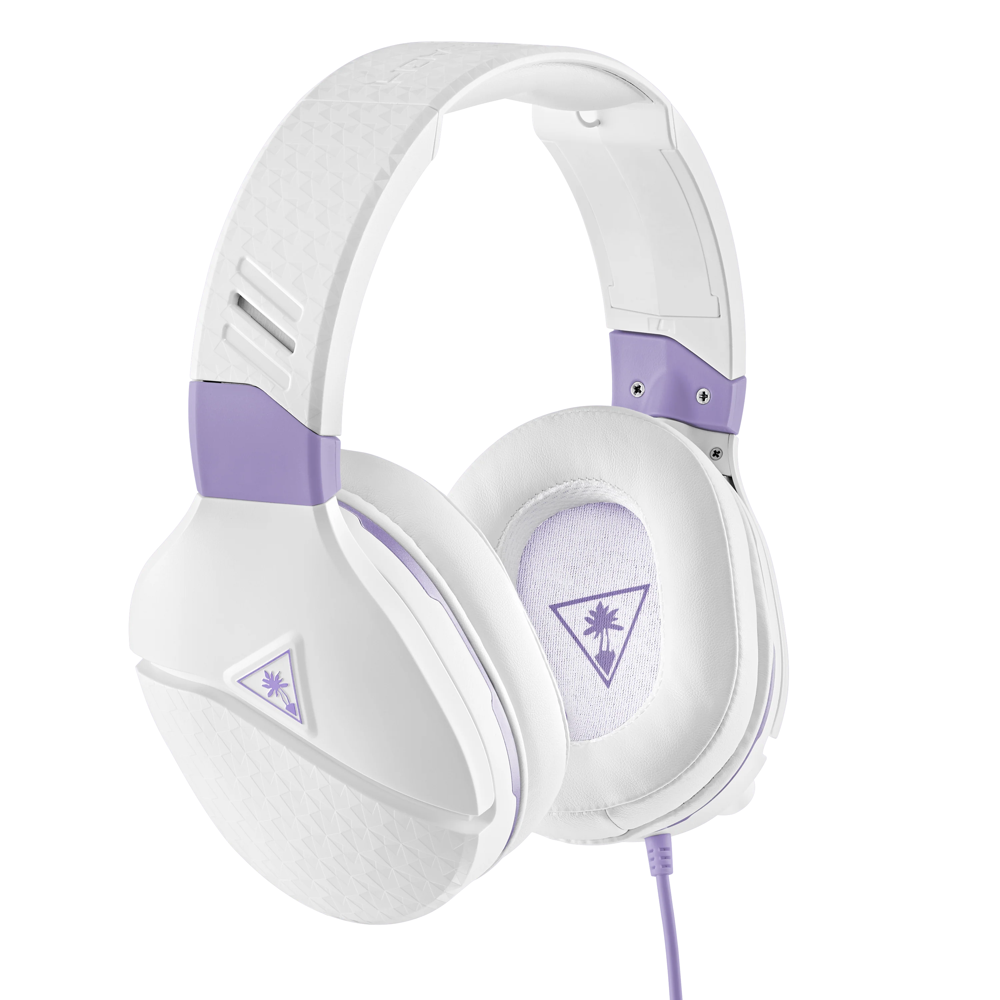
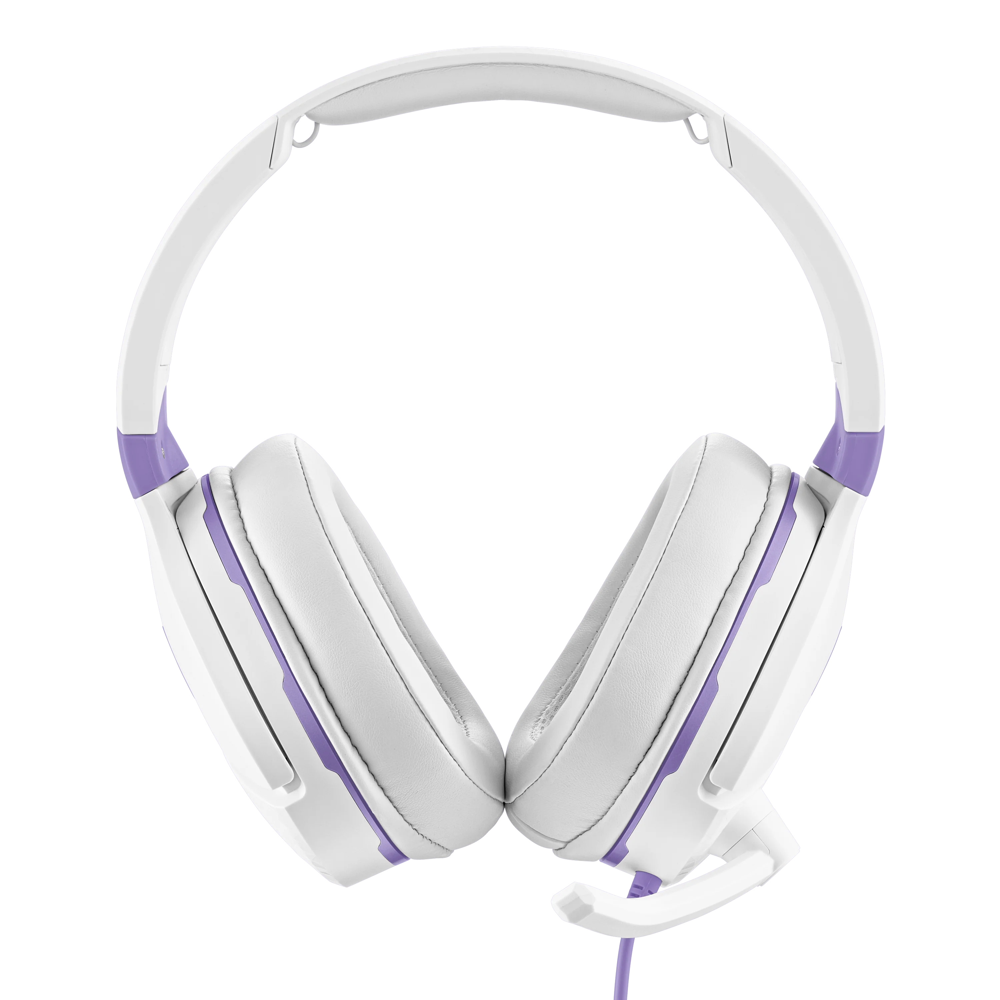

üéß Entends la victoire. Le son du jeu, la cl√© du succ√®s.
Que tu sois sur Call of Duty, Valorant, Counter-Strike, Rainbow Six Siege ou tout autre FPS, un bon casque fait toute la différence. Grâce à un son spatialisé ultra-précis, tu entends chaque pas, chaque rechargement, chaque menace avant même de la voir. Anticipe, réagis, élimine. Confortable et conçu pour la compétition, notre casque te donne l’avantage à chaque round, parce que dans les FPS, chaque son, compte.


